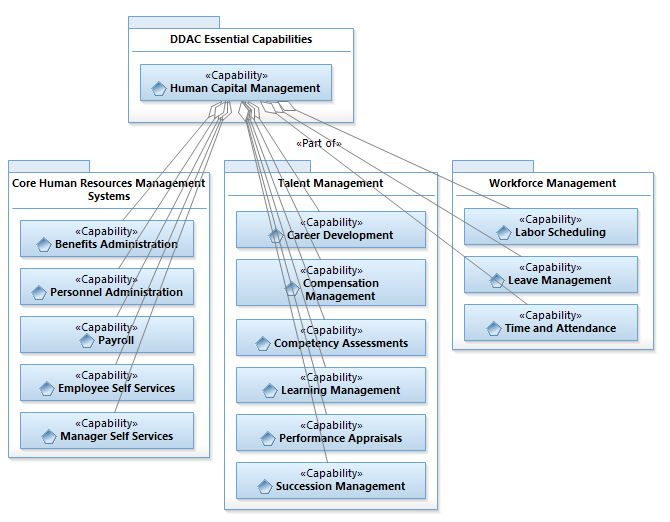

The following model represents the capabilities proposed by Gartner as industry best practice from their last review of our Human Capital Management capabilities. The use cases are organized by capability rather than organizational structure.
POC: Rob Byrd | City of Austin
Chief Enterprise Architect - Corporate
Direct: (512) 974-1615
Figure: Best Practice Human Capital Management Capability Model

Table: Use Case Model Outline
Other non-Human Capital Management Use Cases